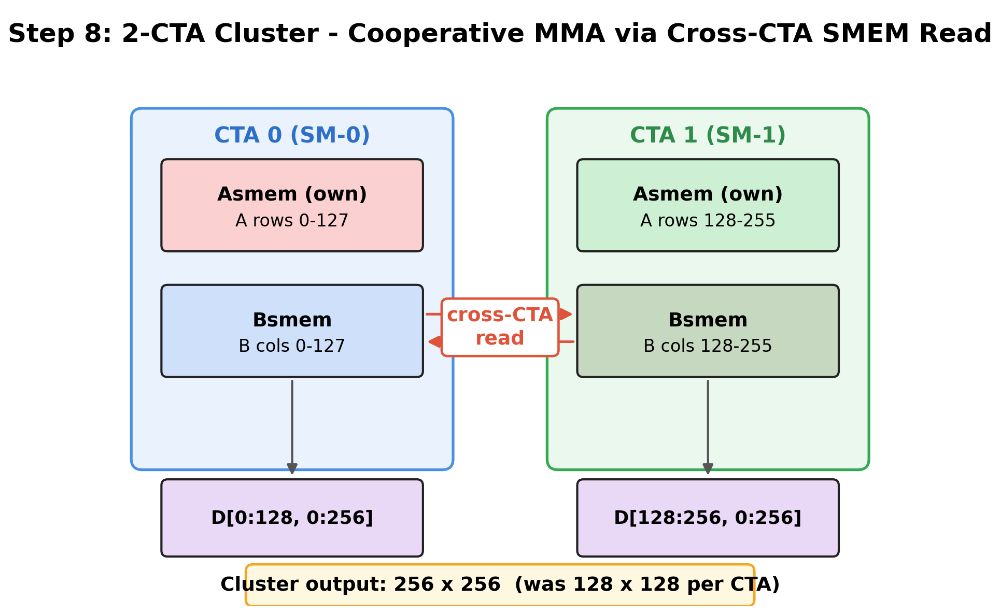

GPU Execution Model#
Overview
A kernel runs over a thread hierarchy (thread → warp → warpgroup → CTA → cluster → grid) across distinct memory spaces (registers, SMEM, GMEM, TMEM).
Compute splits into CUDA cores and Tensor Cores; dedicated engines like TMA move the data that feeds them.
Every later optimization serves one tile pipeline — load (GMEM → SMEM), compute (SMEM → TMEM), epilogue (TMEM → registers → GMEM) — and aims to keep the compute and data-movement engines busy at once.
Before we can reason about why one kernel is fast and another is slow, we need a picture of the
machine it runs on. A GPU runs a kernel across a hierarchy of threads, a set of distinct memory
spaces, and a few compute and data-movement engines, and every optimization later in this book is
ultimately a way of arranging work across those three things. This chapter assembles the picture:
the thread hierarchy, the compute units, the memory spaces, and how a GEMM flows across them. The
tcgen05 compute path (Tensor Cores: tcgen05), TMA data movement (Async Data Movement: TMA), and the
mbarrier coordination model (Async Coordination: mbarriers) each get their own chapter; here we
establish the hierarchy and dataflow they build on.
Interactive: the Blackwell SM — its warps/warpgroups, shared memory, Tensor Memory, and the Tensor Core and TMA engines.
The Execution Hierarchy#
Why does a GPU need so many levels of grouping rather than a flat pool of threads? Because cooperation happens at different scales: the lanes of a warp execute in lockstep, the threads of a CTA share that CTA’s shared memory, and the CTAs of a cluster synchronize across SMs. A GPU organizes its threads into a nested hierarchy, and on Blackwell the levels are these:
Interactive: click a level — thread → warp → warpgroup → CTA → cluster → grid.
Thread — the scalar unit of execution, identified by a lane ID within its warp.
Warp — 32 threads executing in SIMT (single instruction, multiple threads): the lanes issue the same instruction together, but each has its own registers and can be masked off independently (so lanes can take different branches).
Warpgroup — 4 consecutive warps (128 threads). Introduced on Hopper as the unit for warpgroup-level MMA (
wgmma), it is also the cooperation unit for Blackwell Tensor Memory access, where the 128 threads cooperatively move a TMEM tile to or from registers.CTA (Cooperative Thread Array, a.k.a. a CUDA thread block) — the basic scheduling unit. A CTA runs on a single SM and owns that SM’s shared memory.
Cluster — a group of cooperating CTAs (across SMs) that can synchronize and access each other’s shared memory (distributed shared memory).
These levels are not just an organizational convenience; they matter because Blackwell operations
are not all issued by the same group of threads. A TMA copy is issued by one thread and
finished by hardware; a TMEM→register load is warpgroup-cooperative; a tcgen05 MMA is committed
by one elected thread; a clustered MMA spans two CTAs. Each operation, in other words, has a
natural granularity, and which threads run it is the operation’s scope — the first of the
book’s three recurring knobs (scope, layout, dispatch).
Compute: CUDA Cores and Tensor Cores#
Once threads are organized, the question is what they actually compute on. An SM offers two kinds of math engine, and the split between them shapes how every kernel is written:
CUDA cores — general-purpose SIMT ALUs that execute scalar/vector instructions for indexing, elementwise math, reductions, and control flow.
Tensor Cores — fixed-function units that execute a dense matrix multiply-accumulate at tile granularity in a single instruction: \(D = AB + C\).
Tensor Cores are not new: they have performed tile-level MMA since Volta (2017), and dense
linear algebra (GEMM, convolution, attention) reaches peak throughput only on them. What changes from one GPU generation to the next is not their existence but how the
Tensor Core is programmed and where its results live: the asynchronous warpgroup MMA model
arrived with Hopper, and Blackwell’s fifth-generation Tensor Core (tcgen05, with accumulators in
Tensor Memory) is covered in Tensor Cores: tcgen05.
Memory Spaces#
Feeding those engines is the other half of the story, and it is a hierarchy too. No single memory can be both large and fast, so a GPU offers several, and a kernel moves data through them, each with its own capacity, latency, and access rules:
Memory |
Ownership |
Role |
Notes |
|---|---|---|---|
Global (GMEM) |
Device-wide |
Persistent tensor storage |
Large HBM, shared by all SMs |
Shared (SMEM) |
Per-CTA (one SM) |
Tile staging |
Low-latency scratchpad; up to 228 KB/SM on B200 |
Tensor Memory (TMEM) |
Per-SM |
MMA accumulator storage |
New on Blackwell; used by |
Register File (RF) |
Per-thread |
Scalars and per-thread tile fragments |
Fast; holds epilogue/temp values |
These spaces are not used independently; they form a path. The data path of almost every kernel in this book is GMEM → SMEM → (compute) → registers → GMEM, with TMEM holding accumulators in the middle for tensor-core kernels.

Of these spaces, Tensor Memory (TMEM) is the one without a pre-Blackwell analog, so it is
worth naming here even though its details belong to Tensor Cores: tcgen05. Earlier GPUs kept
large MMA accumulators in registers; Blackwell instead writes tcgen05 accumulator output to
TMEM, a per-SM 2D scratchpad (128 rows × up to 512 32-bit columns), and the kernel then explicitly
reads TMEM into registers for the epilogue. That extra step is not free, and two consequences of it
show up everywhere later: TMEM reads are explicit and warpgroup-cooperative, and TMEM must be
explicitly allocated and freed.
CTA Clusters#
So far CTAs have been independent — each on its own SM, each owning its own shared memory. But a single CTA’s SMEM budget is finite, and large tiles often need more operand storage or more reuse than one block can supply. Hopper’s answer was the thread block cluster: a group of CTAs that cooperate more tightly than independent blocks, able to synchronize together and access each other’s shared memory (distributed shared memory, DSMEM). Blackwell builds on clusters with dynamic scheduling (Advanced Topics: Cluster Launch Control) and 2-CTA cooperative MMA.
The key new capability is distributed shared memory (DSMEM) — the ability of cluster CTAs to
reach each other’s shared memory — and the hardware exposes it in two parts. The first is an
address: the mapa instruction maps a local SMEM pointer to a peer CTA’s rank, returning the
same offset in that CTA’s SMEM. The second is a transfer: a single thread can bulk-copy a tile
from its own SMEM into a peer’s, signalling a completion barrier (Async Coordination: mbarriers) when
the bytes land — a cluster-scoped cp.async.bulk. The 2-CTA cluster GEMM in Part III uses exactly
this to share operand tiles across the pair without a round trip through global memory.

Two cluster features built on DSMEM recur in the GEMM chapters: 2-CTA cooperative MMA, where two CTAs contribute SMEM operands to one larger MMA tile, and TMA multicast, where one TMA load delivers the same GMEM tile to several CTAs and so cuts redundant global traffic.
The GEMM Data Pipeline#
Interactive: the load → MMA → epilogue pipeline on Blackwell, and how the stages overlap.
We now have all the pieces — threads, engines, memories, clusters — so we can trace how they work together on the workload this book cares about most. A GEMM tile flows across the hardware in three stages:
Load. A TMA copy (Async Data Movement: TMA) streams an A/B operand tile from GMEM into SMEM. One thread issues it; the TMA engine does the transfer and signals an mbarrier when the bytes land.
Compute. A
tcgen05MMA (Tensor Cores: tcgen05) reads the SMEM operands and accumulates into a TMEM tile. It is issued by one elected thread and signals a barrier when done.Epilogue. The warpgroup reads the TMEM accumulator into registers, casts it to the output dtype, and stores it back to GMEM (often via SMEM staging + a TMA store).
Listed this way the stages look strictly sequential, and that is exactly the trap. The difference
between a slow and a fast kernel is overlap. A naive kernel runs the steps in order — load,
wait, compute, wait, store — leaving each engine idle while it waits for the previous one. A fast
kernel instead pipelines them: while the Tensor Core computes on tile k, the TMA engine is
already fetching tile k+1 and the epilogue is draining tile k-1, so all three engines stay
busy at once. Making three asynchronous engines hand work to each other safely is the job of the
barrier/phase model (Async Coordination: mbarriers), and Part III’s GEMM ladder is built on it.
Numbers to Keep in Mind#
The shape of every design decision in this book comes down to a handful of capacities and speeds. The orders of magnitude below (B200, approximate) are what explain why kernels stage only a few operand tiles, budget TMEM carefully, and work hard to keep the Tensor Cores fed:
Quantity |
Value (B200, approx.) |
Where it shows up |
|---|---|---|
Streaming multiprocessors per GPU |
~148 |
grid sizing, persistent schedulers |
Shared memory per SM |
up to 228 KB |
SMEM budget for pipeline depth |
Tensor Memory per SM |
128 rows × 512 cols (32-bit) |
accumulator budget |
Registers per thread (max) |
255 × 32-bit |
why big accumulators don’t stay in RF |
Tensor Core peak @ fp16/bf16 (dense) |
order of 2 PFLOP/s |
the compute roof (What Makes a Kernel Fast) |
Tensor Core peak @ fp8 / fp4 (dense) |
several PFLOP/s |
mixed-precision GEMM |
HBM3e bandwidth |
order of 8 TB/s |
the memory roof |
One fp16 128×64 tile in SMEM |
16 KB |
example staged operand-tile size |
Exact peak numbers depend on SKU, clock, and sparsity mode — use the table as scale, not a performance model. The takeaway: SMEM holds only a handful of staged tiles, TMEM must be budgeted, and tensor-core throughput is high enough that data movement must overlap compute.